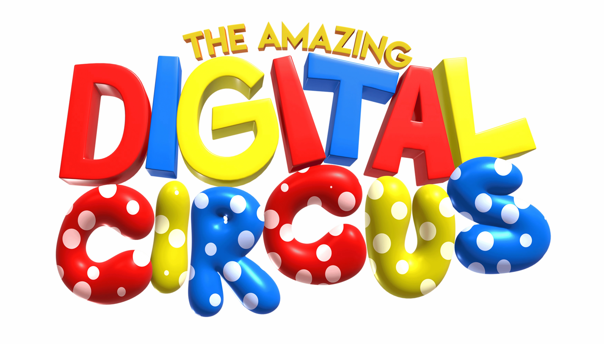

PREMIÄR 2026-06-04
Med Caine borta och cirkusen nedsläckt, har de andra ingenting kvar utom sina gamla misstag och trauman. Allt medan evigheten tränger sig på dem, uppenbarar sig sakteligen sanningen bakom the Digital Circus. Kommer de att acceptera det de lär sig eller kommer de ... välja det andra alternativet? Och sen kommer någon av dem någon gång antagligen säga något roligt, för, slutet kan väl inte vara SÅ deprimerande, eller?
Detta är en tidig screening av avsnitt 9 tillsammans med avsnitt 8
Regissör & Författare Gooseworx
Skådespelare Lizzie Freeman ,Michael Kovach ,Amanda Hufford ,Marissa Lenti ,Ashley Nichols ,Sean Chiplock ,Cassie Ewulu ,Skye Redden ,Alex Rochon ,Gooseworx
Den fulla episoden har släppts ut så inga fler visningar kommer köras köras